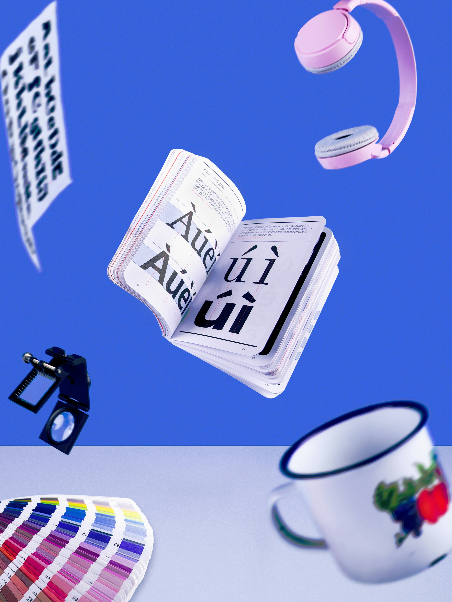

Modern Artificial Intelligence
Posted on October 9, 2026 by Johnathan Jackson
Modern artificial intelligence has transformed from simple, rule-based programs into sophisticated neural networks capable of processing vast amounts of data.
Powered by deep learning and large language models, these systems can understand natural language, generate creative media, and recognize complex patterns.
Across industries like healthcare, finance, and logistics, modern AI tools automate routine tasks and enhance human decision-making in real time.
As the technology continues to advance, ensuring responsible development and ethical safeguards remains essential to balancing rapid innovation with user privacy and fairness.
The future of AI holds exciting possibilities, from personalized education and healthcare to autonomous vehicles and smart cities.
However, it also raises important questions about job displacement, algorithmic bias, and the need for transparent governance.
By fostering collaboration between researchers, policymakers, and the public, we can harness the power of AI to create a more equitable and sustainable future for all.
AI in Creative Works
Posted on October 10, 2026 by Johnathan Jackson

Genuine artistic expression stems from raw human experience, emotion, and vulnerability—qualities that an algorithm can only simulate, never truly feel.
By replacing the personal struggle and craft of art-making with automated predictions, generative tools trivialize the deep dedication required to master a creative discipline.
Furthermore, these systems frequently rely on harvesting millions of copyrighted human works without consent or compensation, building commercial products on uncredited artistic labor.
Ultimately, surrendering artistic creation to machine output threatens to reduce human culture to a derivative echo chamber, stripping art of its essential soul and social meaning.
While AI can serve as a tool for inspiration or efficiency, it cannot replicate the nuanced understanding of context, symbolism, and emotional resonance that human artists bring to their work.
The creative process is inherently human, shaped by personal experiences, cultural influences, and the capacity for empathy and reflection.
By embracing the irreplaceable value of human creativity, we can ensure that art remains a vibrant and meaningful expression of our shared humanity, rather than a commodified output of algorithmic processes.